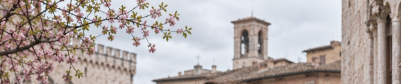
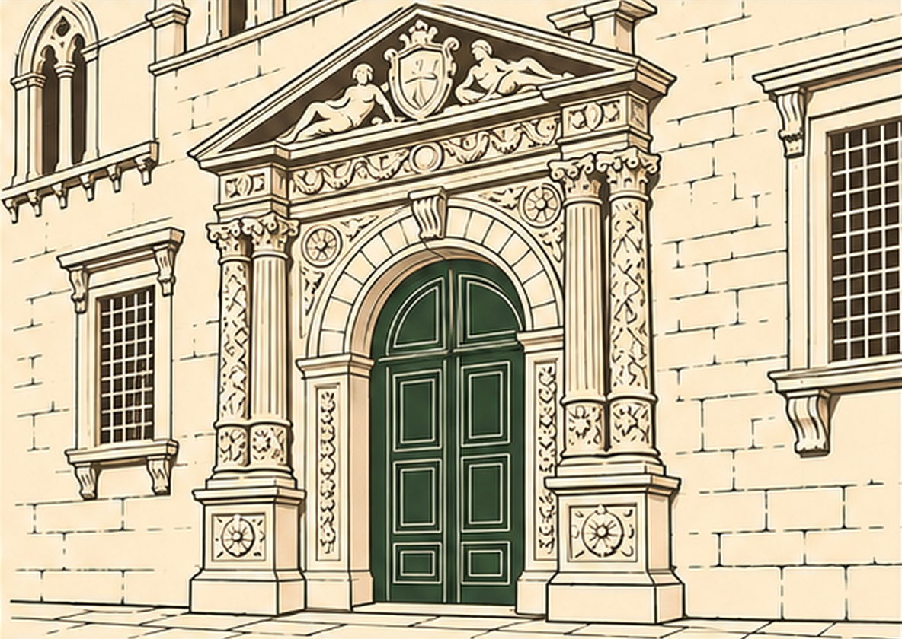
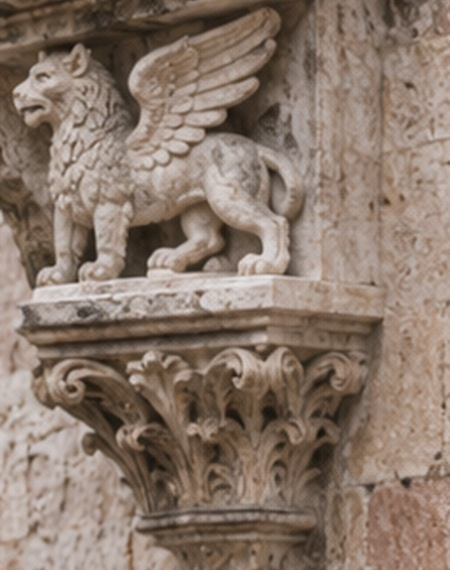

IJF 2027 · CCIJ
The Bots
Ridge.
Inquadra un riferimento. Recupera il Data Fragment.
Piazza Giacomo Matteotti · Tappa pilota
Scegli l’inquadratura
Prova di riconoscimento
Scegli l’inquadratura
Queste sono immagini di prova. Apri il riferimento su un secondo schermo o stampalo e inquadralo. Le immagini di Perugia saranno verificate sul posto.

I fotogrammi restano sul dispositivo. L’app non li registra né li invia.
Data Fragment
Un frammento è una traccia da verificare. Che cosa controlleresti prima di usarla in un’inchiesta?
Prova un’altra inquadratura ↑
Stanza dei giochi · sede da confermare →
Percorso proposto per il festival
La prova interattiva è disponibile alla tappa CCIJ. Le sedi delle tappe sono proposte.
- Teatro Pavone Ingresso
- Hotel Brufani Dark Money
- Via Giuseppe Mazzini 10 Kleptocrat
- Rocca Paolina Ciudad Perdida
- Piazza IV Novembre Investigative Simulations Lab
- Piazza Giacomo Matteotti The Bots Ridge ↗